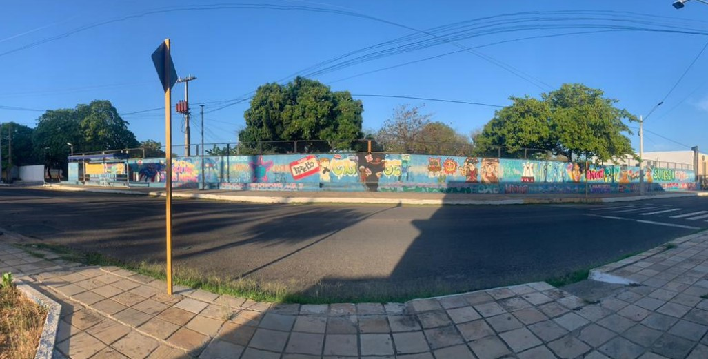
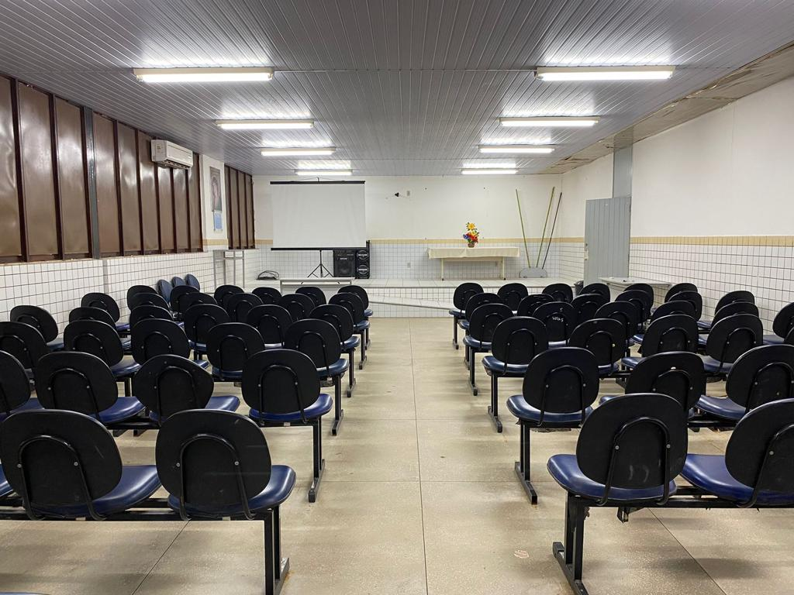
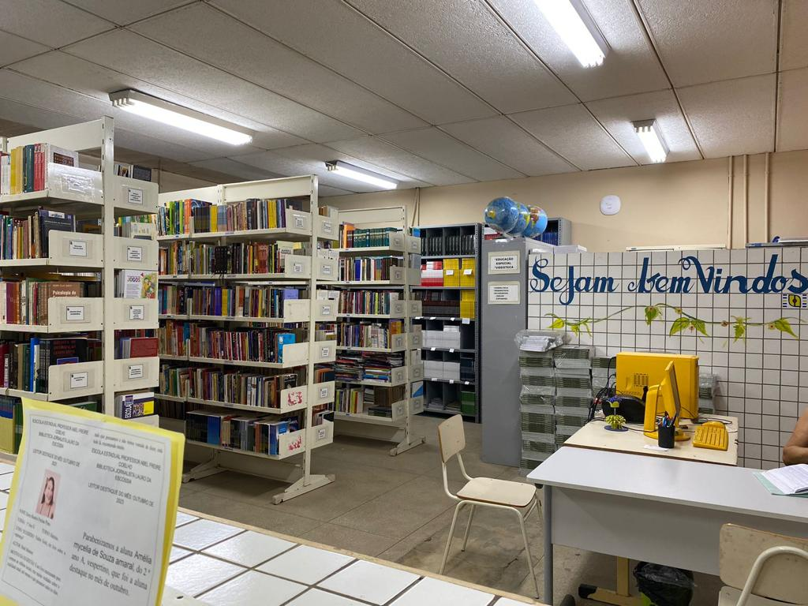
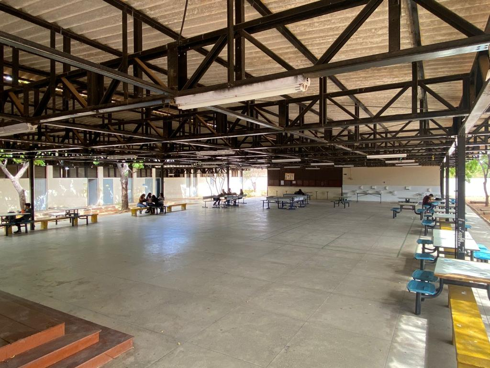
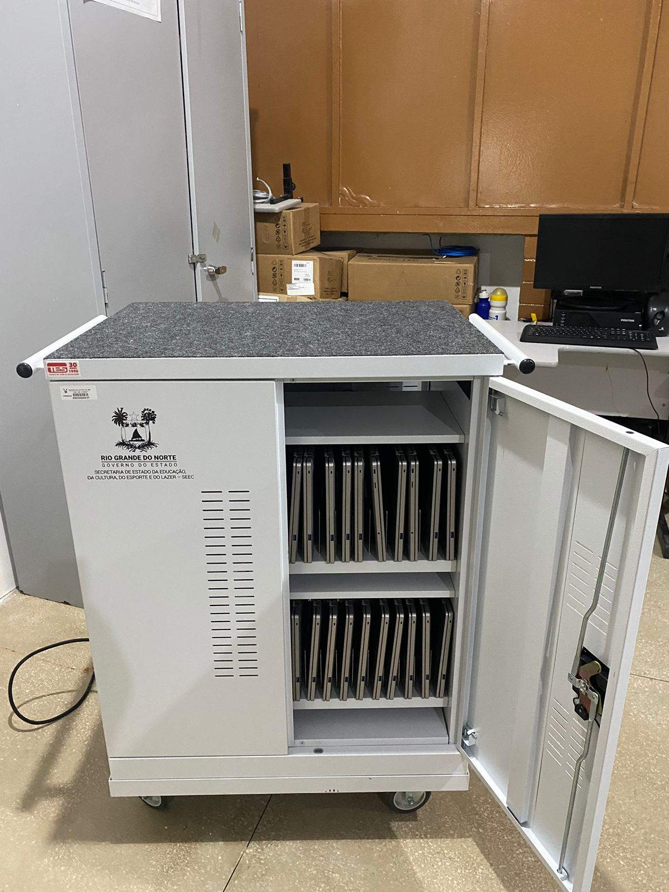

Frente
Auditório
Biblioteca
Lab. de Química

Refeitório
Lab. de infórmatica 1

Lab. de infórmatica 2

Lab. de Biologia

Bloco/Corredores
.png)
Sala de aula
.png)
Lab. de Física

Quadra coberta
.png)
Quadra de Basquete
.png)
Galeria de fotos do curso técnico

Projetos desenvolvidos
Em 2023 desenvolvemos diferentes projetos em diversas áreas do conhecimento.
Feira de Ciências da escola
.png)
Feira de Ciências da DIREC
.png)
Feira de Ciências da UFERSA
.png)
Aluno(a) monitor(a)
.png)
Preparatório - OBMEP
 - Copia.png)
Leitor(a) destaque
 - Copia - Copia.png)
Aulões para o Enem
 -aulao enem.png)
Simulados para o Enem
 - simulados.png)
Visita técnica - Informática
 - visita do info.png)
Visita técnica - Fac. de Medicina
 - med.png)
Esporte
 - esporte 1.png)
 - esporte 2.png)
Campeão do Jern's local(Mossoró) e estadual(Natal) - 2023
 - campeão.png)
Matrícula
 - sigeduc.png)
TRANSFERÊNCIA REDE ESTADUAL - 29/01/2024 a 01/02/2024
MATRÍCULA REDE MUNICIPAL E PARTICULAR - 15/02/2024 a 01/03/2024
Documentos
Cópia dos documentos de identificação: RG, CPF, comprovante de residência, cartão SUS, bolsa família, certidão de nascimento ou casamento/averbação;
Menores de 18 anos: Cópia do RG e CPF do responsável;
Histórico escolar, ou declaração provisória de transferência e 1(uma) foto 3x4.
SIGAM NOSSA REDE SOCIAL
 - qrcode.png)
Escola Estadual Prof. Abel Freire Coelho
Venham fazer parte da nossa escola!
MATRÍCULAS ABERTAS
(84) 3315-5658